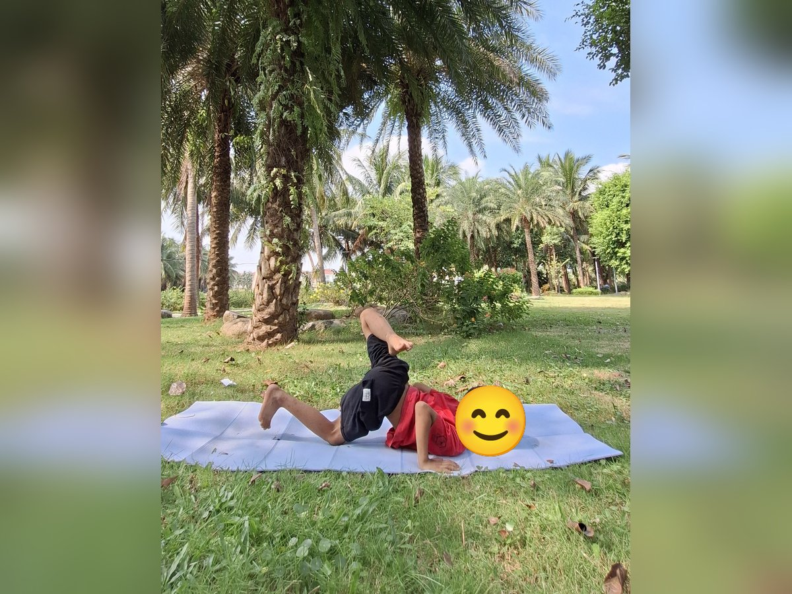

Chủ đề 34 · Sa mạc
Lạc Đà chia nước giữa sa mạc
🌟 Bài học trong câu chuyện
Giới luật yoga: Brahmacharya – Biết điều độ, vừa đủ. Bé biết lúc nào chơi, lúc nào nghỉ, ăn vừa đủ no.
Kỹ năng sống: Dùng nước tiết kiệm, uống vừa đủ.
1. Khởi động (2 phút)
Cả lớp ngồi xếp bằng thành vòng tròn. Cùng thở 3 hơi thở bông hoa: hít vào bằng mũi như ngửi hoa, thở ra bằng miệng thật chậm. Chắp tay trước ngực và chào nhau: “Namaste, chào các bạn!”
2. Câu chuyện: Lạc Đà chia nước giữa sa mạc (đọc cho bé nghe, 4 phút)
Cô đọc trọn câu chuyện cho bé nghe trước. Sau đó cô kể lại từng đoạn ngắn và cả lớp cùng tập 10 tư thế ở phần bên dưới.
Bác Lạc Đà dẫn một đoàn bạn đi qua sa mạc mênh mông. Cát vàng nóng bỏng, mặt trời đỏ rực trên đầu. Đường còn xa lắm, mà cả đoàn chỉ còn đúng một bình nước.
Bạn Rắn trườn trên cát nóng: "Xì xì, khát quá!". Bạn Bọ Cạp đòi: "Cho tớ uống thật nhiều, thật nhiều!". Cây Xương Rồng đứng giữa sa mạc, lặng lẽ giữ nước trong thân rất giỏi.
Bác Lạc Đà nói: "Nếu mỗi bạn uống thật nhiều, bình nước sẽ hết ngay. Mỗi bạn chỉ uống một ngụm vừa đủ, để cả đoàn đều có nước suốt đường đi". Bọ Cạp hơi phụng phịu, nhưng rồi cũng uống một ngụm vừa đủ.
Nắng gắt quá, cả đoàn nghỉ dưới bóng kim tự tháp. Bạn Thằn Lằn nằm thở chậm cho đỡ mệt. Rồi cả đoàn lại đi, vượt qua những cồn cát cao như những chiếc cầu. Bạn Cáo tai to dỏng tai nghe ngóng: "Có tiếng nước chảy!"
Trước mặt là ốc đảo xanh mát, có hồ nước trong và những cây dừa cao. Cả đoàn reo lên. Nhờ uống vừa đủ, suốt đường đi không bạn nào bị khát. Bác Lạc Đà mỉm cười: "Biết đủ thì ai cũng có phần".
3. Kể lại và tập 10 tư thế (6 phút)
-
 1
1Lạc đà
🧘 Tư thế Lạc đà (Camel)
Lời kể khi tập: Lạc Đà bước đi, cái bướu đầy nước dự trữ.
Cách làm: Quỳ đứng, hai tay chống hông hoặc chạm gót chân như trong ảnh, nhẹ nhàng ưỡn ngực và nhìn lên trời. Giữ 3 đến 5 nhịp thở.
-
 2
2Con rắn
🧘 Tư thế Rắn hổ mang (Cobra)
Lời kể khi tập: Rắn trườn trên cát nóng: "Xì xì, khát quá!"
Cách làm: Nằm sấp, chống hai tay (hoặc hai khuỷu tay) dưới vai, nâng ngực lên, phát tiếng xì xì như rắn. Giữ 3 đến 5 nhịp thở.
-
 3
3Cây xương rồng
🧘 Tư thế Nữ thần (Goddess)
Lời kể khi tập: Xương Rồng đứng giữa cát, giữ nước rất giỏi.
Cách làm: Dang rộng hai chân, mũi chân hướng ra ngoài, gập gối, hai tay mở rộng hai bên. Giữ 3 đến 5 nhịp thở.
-

4Bọ cạp
🧘 Tư thế Bọ cạp (Scorpion)
Lời kể khi tập: Bọ Cạp đòi uống thật nhiều nước. Mình làm bọ cạp, nhấc đuôi thật cao.
Cách làm: Nằm sấp, hai tay chống dưới vai, cằm chạm nhẹ thảm, co gối nhấc hai chân lên cao như chiếc đuôi bọ cạp. Giữ 3 đến 5 nhịp thở.
-
 5
5Kim tự tháp
🧘 Tư thế Tam giác (Triangle)
Lời kể khi tập: Lạc Đà nói: "Mỗi bạn uống một ngụm vừa đủ thôi, để còn cho cả đoàn".
Cách làm: Dang rộng hai chân, một tay chạm ống chân, tay kia vươn thẳng lên trời. Đổi bên. Giữ 3 đến 5 nhịp thở.
-
 6
6Mặt trời nóng
🧘 Tư thế Chào mặt trời (Sun Salutation)
Lời kể khi tập: Mặt trời nóng rực. Mọi người cùng nghỉ dưới bóng râm.
Cách làm: Đứng thẳng, hít vào vươn hai tay lên cao chào mặt trời, thở ra cúi gập người, hai tay chạm chân hoặc chống lên viên gạch như trong ảnh, rồi hít vào từ từ đứng lên. Giữ 3 đến 5 nhịp thở.
-
 7
7Thằn lằn
🧘 Tư thế Cá sấu (Crocodile)
Lời kể khi tập: Thằn Lằn nằm nghỉ, thở thật chậm cho đỡ mệt.
Cách làm: Nằm sấp, hai tay chống, nâng nhẹ ngực lên, chân duỗi thẳng như cá sấu nằm phơi nắng. Giữ 3 đến 5 nhịp thở.
-
 8
8Cồn cát
🧘 Tư thế Cây cầu (Bridge)
Lời kể khi tập: Đoàn đi qua những cồn cát cao.
Cách làm: Nằm ngửa, co gối, bàn chân đặt trên sàn, nâng hông lên cao như cây cầu. Giữ 3 đến 5 nhịp thở.
-
 9
9Cáo sa mạc tai to
🧘 Tư thế Con thỏ (Rabbit)
Lời kể khi tập: Cáo tai to nghe thấy tiếng nước chảy!
Cách làm: Quỳ gối, cúi đầu chạm thảm, hai tay nắm gót chân, nhẹ nhàng nâng mông lên. Giữ 3 đến 5 nhịp thở.
-
 10
10Cây dừa ốc đảo
🧘 Tư thế Cái cây (Tree)
Lời kể khi tập: Đến ốc đảo rồi! Nhờ uống vừa đủ, cả đoàn đều có nước suốt đường đi.
Cách làm: Đứng một chân, bàn chân kia đặt vào bắp chân hoặc đùi (không đặt lên đầu gối), hai tay chắp trên đầu. Giữ 3 đến 5 nhịp thở.
4. Thư giãn (2 phút)
Các con nằm ngửa, tay chân thả lỏng, nhắm mắt lại. Cô nói nhẹ: “Hít vào thật chậm… thở ra thật chậm… Con nhớ lại câu chuyện vừa rồi, nhớ người bạn mình thích nhất trong truyện. Cơ thể con mềm như bông, nhẹ như mây.” Sau đó các con nghiêng người, từ từ ngồi dậy.
5. Trò chuyện cùng bé (1 phút)
Cả đoàn uống vừa đủ nên ai cũng có nước. Biết điều độ, vừa đủ là Brahmacharya.
Cô hỏi các con:
- Vì sao phải tiết kiệm nước?
- Ở sa mạc có những con vật gì?
Kết thúc bằng lời chào “Namaste” và một nụ cười.
Lưu ý cho thầy cô và bố mẹ: Tập trên thảm, không tập ngay sau khi ăn no. Bé chỉ làm tới mức thấy dễ chịu, không ép bé. Tư thế đứng một chân có thể cho bé vịn tường hoặc vịn tay người lớn.